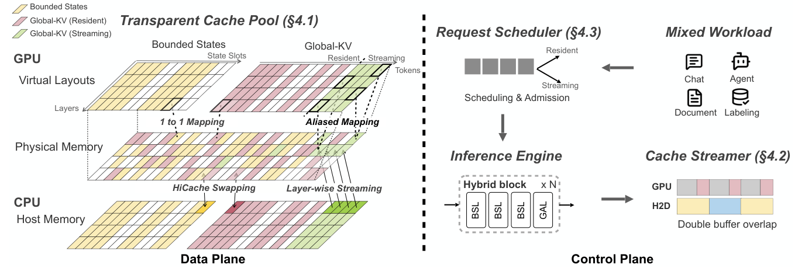
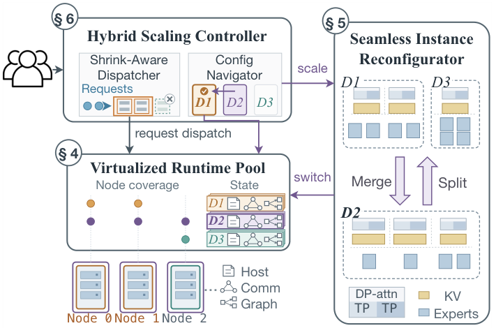
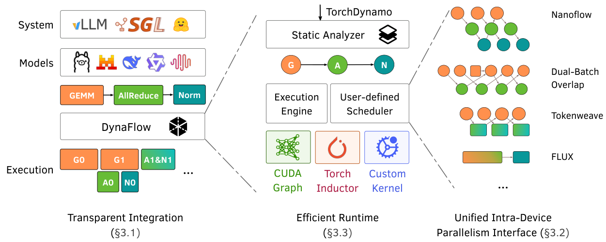

Manuscript · 2026
I am a computer science undergraduate in the ACM Honors Class at Shanghai Jiao Tong University, expecting to graduate in June 2027. In summer 2026, I was a research intern at MIT HAN Lab, advised by Prof. Song Han and mentored by Qinghao Hu. Previously, I worked with Prof. Quan Chen at SJTU’s EPCC Lab.
My research interests lie in machine learning systems, with a focus on efficient and scalable inference for large language models. I am particularly interested in memory management and parallel execution for improving the performance and resource efficiency of LLM serving.
I am applying to PhD programs starting in Fall 2027. I would be happy to discuss potential research fit and collaboration opportunities. Please feel free to get in touch.

Manuscript · 2026

Manuscript · 2026
* Equal contribution.

Research Intern · HAN Lab
Jul 2026 – Sep 2026
Advisor: Prof. Song Han · Mentor: Qinghao Hu
B.Eng. in Computer Science & Technology · ACM Honors Class
Sep 2023 – Jun 2027 (expected)
Core GPA 3.96/4.30 · Rank 5/27